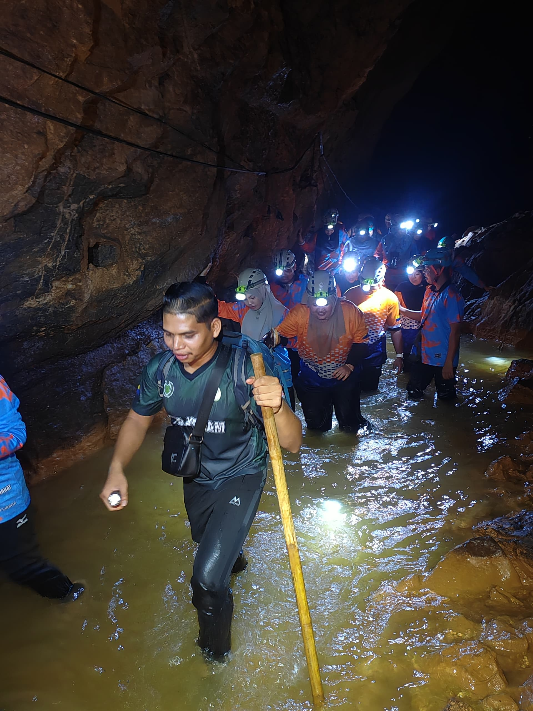
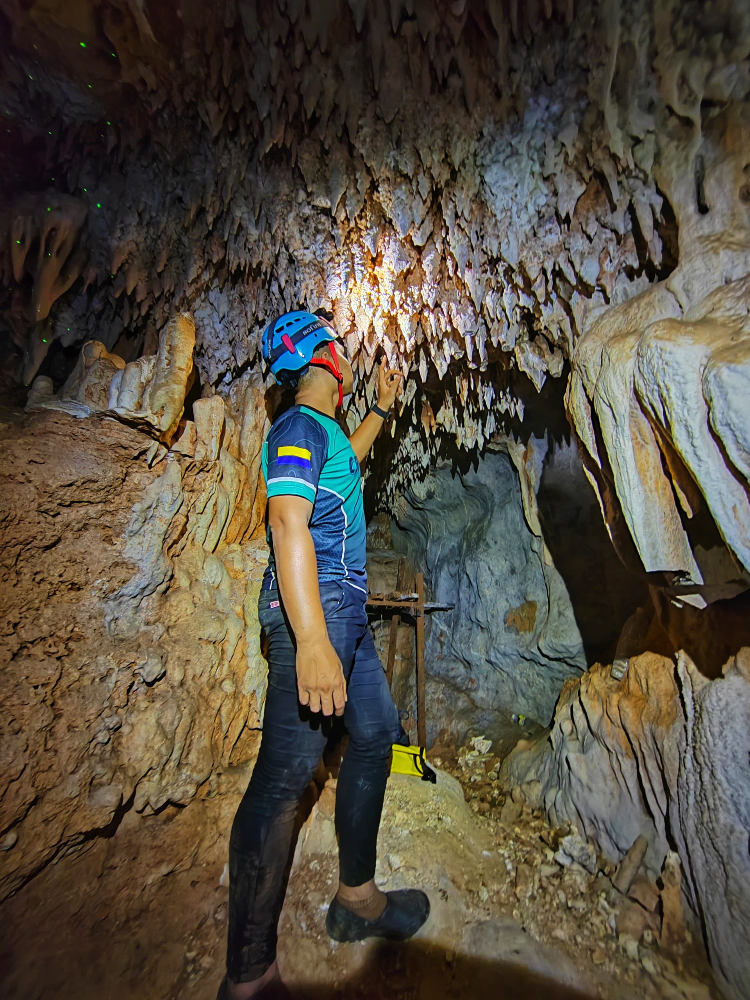

Experience



Encik Azim has extensive experience as a forest guide at Gua Kelam, Perlis. From a young age, he has shown a strong interest in nature and outdoor exploration, often joining local villagers in forest and cave activities. This early exposure helped build his confidence and passion for working in natural environments. Before becoming a full-time forest guide, Encik Azim underwent basic training in cave safety procedures, visitor management, emergency response, and environmental conservation awareness. This training equipped him with the necessary skills to handle visitors professionally and ensure their safety during cave explorations. In his career, Encik Azim regularly guides both local and international tourists through Gua Kelam. He explains the cave’s history, its unique limestone formations, and its historical significance as a former mining site. He also ensures that all visitors follow safety rules throughout their journey inside the cave. Throughout his experience, he has faced various challenges such as slippery cave pathways, dark and narrow sections, and assisting visitors who feel anxious or fearful inside the cave. These situations have strengthened his ability to remain calm, manage groups effectively, and provide reassurance to tourists. In addition, Encik Azim plays an important role in environmental conservation by ensuring that the cave remains clean and protected from pollution. He actively monitors tourist activities and promotes eco-tourism awareness. His efforts have contributed significantly to the development of sustainable tourism in Perlis and helped Gua Kelam become a safer and more well-managed tourist destination. Throughout his experience working at Gua Kelam, Encik Azim also went through several challenging and eerie situations while guiding and exploring caves. Among the caves he explored were Gua Ikan and Gua Kelam 3, which are also located in Gua Kelam, Perlis.
Previously, Gua Ikan and Gua Kelam 3 were considered dangerous areas because they had not yet been renovated with proper safety ropes and secure walkways. Visitors and explorers needed to be extremely careful while entering these caves due to slippery surfaces and difficult tracks.
One of Encik Azim’s most unforgettable experiences happened while he was exploring tracks for the development of the “Trek Ikan”. During the exploration, he almost fell from a height of approximately 80 meters because he was not wearing suitable shoes for the slippery cave track. At that time, he was still inexperienced regarding the importance of proper safety equipment.
Fortunately, Encik Azim managed to hold onto an old wire cable that was previously used by tin miners to pull tin ore. He was left hanging onto the cable before his coworkers rushed to help and successfully pulled him to safety. This frightening experience became an important lesson regarding safety awareness during cave exploration activities.